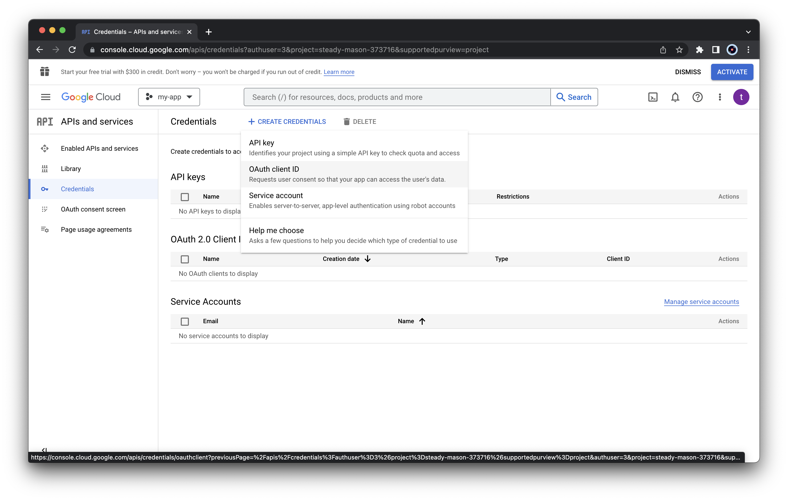

OAuth Client App Configuration
Source:vignettes/articles/oauth-client-configuration.Rmd
oauth-client-configuration.RmdTo upload, edit, and download our files in Google Drive, trackdown relies on the Google APIs. Using Google APIs requires two main things:
- Creating a client app in Google Cloud Console and activate the required Google APIs
- Managing users’ authentication and authorization in R
In the next sections, we describe all the steps to configure everything is needed to use trackdown.
Creating a Client App in Google Cloud Console
Trackdown already provides an internal client app to use the Google APIs. However, the numebr of users is limited and we already reached the maximum number (i.e., 100 users). Thus to use trackdown, we are required to create our own Client App in Google Cloud Console.
To create a Client App in Google Cloud Console, follow these steps:
Access Google Cloud Console at https://console.cloud.google.com/. If this is our first time, we will need to select our country and accept the terms of service
Create a new project by clicking the button “Select a project” and then the button “NEW PROJECT”
 Specify the name of the project and click “CREATE”
Specify the name of the project and click “CREATE”
 Select the newly created project to open it
Select the newly created project to open it
Now we need to activate the required APIs. From the left menu select “APIs and services” > “Enable APIs and services”
 Click the “ENABLE APIS AND SERVICES” button
Click the “ENABLE APIS AND SERVICES” button
 Using the API Library search service we need to select two APIs
Using the API Library search service we need to select two APIs
 Select “Google Drive API” from the list and click
“ENABLE”
Select “Google Docs API” from the list and click
“ENABLE”
Select “Google Drive API” from the list and click
“ENABLE”
Select “Google Docs API” from the list and click
“ENABLE”
Next, we need to specify the setting of the consent screen. From the left menu, select “OAuth consent screen”, choose “External” as User Type and click “CREATE” Specify the App information “App name” and “User support email” (use your email) Specify also the developer contact information (use your email) and press “SAVE AND CONTINUE”
-
Next, we need to select the required scopes. Click “ADD OR REMOVE SCOPES”
 Select the required scopes “…/auth/userinfo.email” and
“openid”
Select the required scopes “…/auth/userinfo.email” and
“openid”
 Select also “…/auth/drive” and “…/auth/docs”
Select also “…/auth/drive” and “…/auth/docs”
 Click “Update” at the end of the list to save changes.
Click “Update” at the end of the list to save changes.After selecting all the required scopes, we should obtain the following summary list Note that we selected sensitive and restriced scopes. Do not worry, these scopes are required to managed files in Google Drive.
[OPTIONAL] In the next section, it is possible to specify users (by email) to allow them using our newly created app. Alternatively, we can publish the app to let everyone (with whom we share the app credentials) to use the app (see below)

In the “Summary” section, we can check all the details and press “BACK TO DASHBOARD” for saving all changes
-
Next, we can publish our app to allow anyone (with whom we share the app credentials) to use our app (in this way we do not need to add email manually to the testers list). To do that, click “PUBLISH APP” from the “OAuth consent screen” and confirm

Do not worry about the message. It is just reporting the requirements for the verification of our app by Google.
We created the app and published it so other users can use it. As our newly created app uses sensitive and restricted scopes (it uses the google docs API to upload/download files on users google drive), Google allows only a limited number of users (100). To be open to anyone, the app must be verified by Google. This requires all the points listed in the message. However, this is an extra step you do not need.
If we are planning to use our new app with a limited number of users (less than 100). We do not need this verification. So we do not need to provide other information to Google.
Now, we need to obtain the credentials to use our newly created app. From the “Credentials” panel, click “CREATE CREDENTIALS” and select “OAuth client ID”  As “Application type”, select “Desktop app” and specify the client app name. Next click “CREATE”
 A window will display the credentials to use the app. We need to
download the JSON file with the credentials by clicking “DOWNLOAD
JSON” or alternatively we can copy the “Client ID” and
“Client Secret”
A window will display the credentials to use the app. We need to
download the JSON file with the credentials by clicking “DOWNLOAD
JSON” or alternatively we can copy the “Client ID” and
“Client Secret”
 This information are required to use the Google APIs through our newly
created app. Only users with this information can use our app. We can
also retrieve the credentials in a second moment by clicking the
download button from the list “OAuth2.0 Client IDs”
This information are required to use the Google APIs through our newly
created app. Only users with this information can use our app. We can
also retrieve the credentials in a second moment by clicking the
download button from the list “OAuth2.0 Client IDs”

Users’ authentication in R
Once created our client app and obtained the credentials to use it (i.e., the JSON file), we are ready to configure trackdown.
To configure trackdown, follow these steps:
- Save the JSON file with the client app credentials in a safe place. This file should be shared only with required users. Avoid saving this file in public repositories (more details below).
- We need to pass the client app credentials to trackdown in order to
use the Google APIs. To do that, we need to do one of the following
things:
Set the
TRACKDOWN_CLIENTenvironment variable to the location of the JSON file. It is convenient to do this in our.Renvironfile withusethis::edit_r_environ(). In this way, trackdown will be able to automatically retrieve the app credentials. Be careful of using the correct absolute/relative path according to the specific needsCall
trackdown_auth_configure(path = "path/to/downloaded/json")by indicating where the JSON lives. This command needs to be run at each session.-
Alternatively, instead of using the JSON details, we can specify directly the client id and secret. Client id and secret can be copied from the “Credentials” panel from the Google Cloud Console (see above).
my_client <- gargle::gargle_oauth_client( name = "my-client-name", id = "123456789.apps.googleusercontent.com", secret = "abcdefghijklmnopqrstuvwxyz" ) trackdown_auth_configure(client = my_client)
- Next, the first time we use trackdown, we will be directed to a web browser and asked to sign in to our Google account to grant permission to communicate with Google Drive.
- We will get a scary warning about an untrusted application, this is
because the application is the one we just created. Click
“Advanced” and “Go to My App (unsafe)” to proceed to
do the oauth flow.

- Select all options (all are required) and continue.

Now, we are ready to use trackdown!
Details
App Credentials
It is important that trackdown has access to our client app credentials.
By default, trackdown first checks if the path to the JSON file is
specified via the TRACKDOWN_CLIENT environment variable. If
not, trackdown will use its internal credentials. However, we have
already exceeded the user limits. So, user custom client app credentials
need to be indicated specifying the JSON file path or the app info
(obtained via gargle::gargle_oauth_client() function) in
the function trackdown_auth_configure().
If you see the following error is because you are using the trackdown
internal credentials and we have already exceeded the user limits.

Note that the credential used by trackdown will be automaticlayy applied also to googledrive package functions used internally by trackdown functions
User’s Credentials
trackdown manage the authentication process using gargle R-package.
By default, user credentials are cached in a folder in the user’s home
directory, ~/.R/gargle/gargle-oauth, from where they can be
automatically refreshed, as necessary. Storage at the user level means
that the same token can be used across multiple projects and tokens are
less likely to be synced to the cloud by accident. Note that if one is
using R from a web-based platform like RStudio Server or Cloud, there
will be a variant of this user authentication flow, known as out-of-band
auth (“oob”).
It is possible to personalize gargle’s default settings by adding
options in the .Rprofile startup file. For example, the
preferred Google account and cache folder can be set:
options(
gargle_oauth_email = "my_email@gmail.com",
gargle_oauth_cache = "/path/to/folder/that/does/not/sync/to/cloud"
)Resources
For more details see:
- https://gargle.r-lib.org/articles/gargle-auth-in-client-package.html
- https://gargle.r-lib.org/articles/get-api-credentials.html
- https://gargle.r-lib.org/index.html
To learn how to manage credential securely, see: - https://gargle.r-lib.org/articles/managing-tokens-securely.html